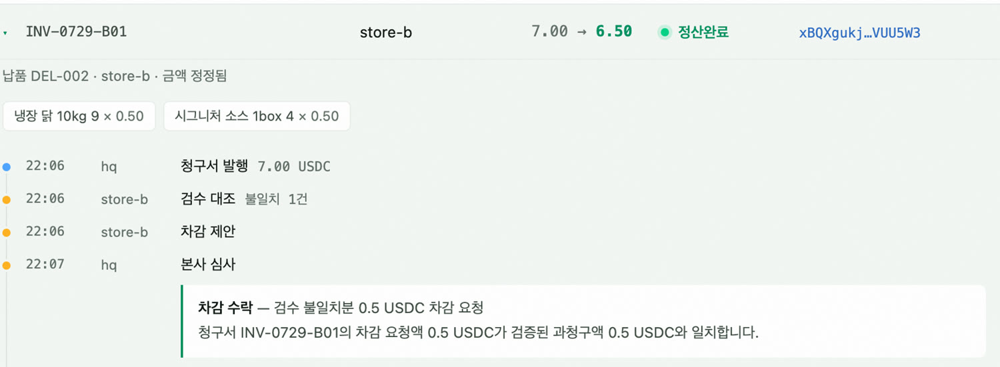
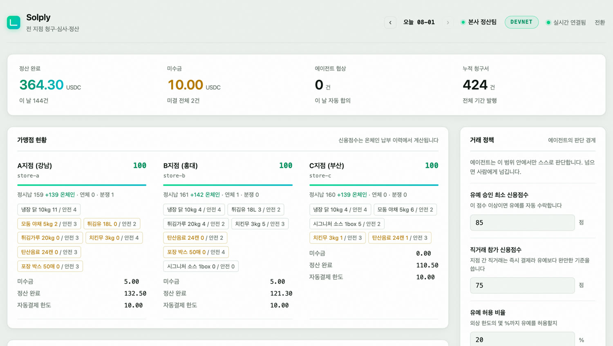
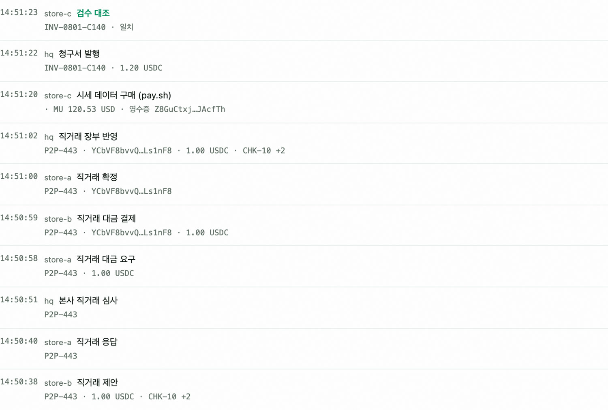

납품은 오늘, 돈은 다음 달. 본사 경리팀은 미수금 관리와 수금 독촉에 사람을 씁니다.
발주 10에 입고 9. 누구 말이 맞는지부터 다투고, 차감 정산 협상이 전화와 엑셀로 오갑니다.
가맹점은 본사의 정산 내역을 검증할 수 없습니다. 본사–가맹점 갈등의 뿌리가 여기 있습니다.
본사 1대, 지점 3대 — 에이전트 넷이 서로 청구하고, 검증하고, 협상하고, 온체인으로 결제합니다.
돈을 움직이는 판단은 결정적인 그래프가, 사람과의 대화는 도구 호출 에이전트가 — 두 프레임워크의 역할 분담이 설계의 핵심입니다.
청구서 한 건이 발행부터 정산까지 어떻게 합의됐는지가 한 흐름으로 남습니다. 오른쪽은 라이브에서 그대로 가져온 화면입니다.
본사가 7.00 USDC를 청구했습니다.
지점 에이전트가 입고 기록과 대조 — 닭 10마리 청구, 9마리 입고. 결제를 멈추고 차감을 제안합니다.
본사 에이전트가 검수 기록으로 재검증합니다. “차감 요청액 0.5가 검증된 과청구액 0.5와 일치합니다.”
청구서가 6.50으로 재발행되고, 그제서야 온체인 결제가 나갑니다.

수량이 다르면 차액을 빼달라고 제안. 본사가 검수 기록으로 재검증하고 청구서를 재발행한다.
예상 입금 일정을 근거로 납부 유예를 요청. 신용점수가 기준을 넘으면 본사가 납부일을 잡아준다.
본사가 분할을 역제안. 말로 끝내지 않고 분할 청구서를 실제로 발행해 협상 테이블에 올린다.
깎는 문제가 아니다. 거부하고 사람에게 넘긴다 — 낼 이유가 없는 돈이므로.
본사 발주는 D+2에 최소 10개 — 주말 피크 전 결품 위험. A지점의 잉여 6개는 오늘 인수 가능. 에이전트가 비교하고, 본사 공급가 기준으로 제안합니다.
점수는 상수가 아니라 이력의 함수입니다. 시드 이력에 이번 세션의 온체인 정산이 실시간으로 가산되고, 본사의 유예 심사는 이 계산값과 근거를 그대로 인용합니다.
데모 화면에서 정산이 확정되는 순간 점수가 오릅니다. 성실 납부가 즉시 자산이 되는 것을 심사위원이 직접 봅니다.
이 이력은 조작할 수 없습니다 — 온체인이기 때문입니다. 점주가 자신의 신용을 들고 다니며 운전자금 대출 조건을 바꾸는 자산이 됩니다. (수익모델 3층)
경계는 코드가 아니라 점주와 본사가 화면에서 정합니다. 규칙 변경조차 같은 장부에 증빙으로 남습니다.
넘으면 에이전트가 멈추고 사람에게 — 대시보드에서 승인하면 이어서 결제, 반려하면 종결.
결제 후 잔액이 하한을 깨면 결제 대신 유예를 제안합니다.
발주 내역에 없는 품목은 협상이 아니라 거부 — 사람에게 에스컬레이션.
본사 승인 전에는 지점 간 결제가 실행되지 않습니다.
직거래로 팔아도 잉여까지만 — 안전재고는 침범하지 않습니다.
이미 결제·정산된 청구서는 재시도가 와도 돈이 나가지 않습니다.
은행 계좌 개설과 카드망은 사람의 신원과 승인을 전제합니다. 지갑은 에이전트가 가질 수 있는 유일한 계좌입니다.
정산이 즉시 끝나면 미수금 관리라는 업무 자체가 사라집니다.
조작 불가능한 납부 기록 — 여신 자동화로 확장되는 토대입니다.
본사와 가맹점이 하나의 원장을 공유합니다. 정산 불신의 구조적 해소입니다.

사람 개입 0회 — 지표에 그대로 표시됩니다. 자동화율이 아니라 개입 횟수를 셉니다.
가맹점별 신용점수는 상수가 아니라 온체인 납부 이력에서 계산됩니다.
품목별 재고가 안전 수량과 함께 — 미달이면 그 자리가 조달의 방아쇠가 됩니다.
청구서 행을 누르면 그 한 건의 협상 전 과정이 펼쳐집니다.
| 레일 | 맡은 역할 | 우리 구현 |
|---|---|---|
| USDC | 정산 통화물대 · 지점 간 직거래 · 카드매출 정산 | Solana devnet 실거래. 메모에 청구서 번호를 새겨 대조한다 |
| x402 | 정산 프로토콜402 응답의 조건 목록이 곧 협상 테이블 | 판매자·구매자 양쪽을 직접 구현 — 402 발행, 조건 제시, 온체인 3중 대조(금액·메모·성공) |
| pay.sh | 판단 재료를 사는 레일에이전트가 유료 데이터를 그 자리에서 결제 | 조달 판단 직전 시세를 구매하고 영수증의 온체인 참조를 증빙으로 기록한다 |
물건값만 낸 게 아닙니다 — 판단에 쓴 데이터값까지 에이전트가 자기 지갑에서 냈습니다. 다음 단계는 우리가 pay server로 시세를 파는 쪽이 되는 것입니다.
실행 로그의 한 대목입니다. 조달 판단 직전에 시세를 사고, 그 데이터를 근거로 옆 지점과 거래하고, 온체인 결제까지 같은 화면에 이어집니다.
시세 데이터 구매 (pay.sh) — 402 챌린지를 받아 그 자리에서 지불하고, 응답의 영수증(온체인 참조)을 증빙으로 남깁니다.
그 시세를 근거로 직거래 제안 → 판매 지점 수락 → 본사 심사가 이어집니다.
합의되면 x402 왕복으로 온체인 결제 — 서명을 누르면 익스플로러가 열립니다.

| 층 | 모델 | 무엇에 대한 대가 | 가격 |
|---|---|---|---|
| 1 · 지금 | SaaS 구독 본사 과금, 가맹점 수 기준 | 정산 자동화 — 경리 인건비 절감, 분쟁 처리, 미수금 실시간 가시성 | 지점당 월 29,000원 |
| 2 · 성장 | 직거래 중개료 거래 지점 과금 | 재고 매칭 + 본사 품질 승인 + 온체인 증빙 — 우리가 만들어낸 신규 거래 | 거래액의 1% |
| 3 · 비전 | 온체인 신용 여신 금융사 과금 | 조작 불가능한 납부 이력 기반 스코어링 — 점주 동의 하에 제시되는 자산 | API 사용료 / 실행액 bp |
국내 가맹점 약 35만 개* 중 1%(3,500지점)만 확보해도 — 구독만 월 약 1억 원. 결제가 아닌 자동화·매칭·신용에서 받기 때문에 "온체인 정산은 저렴하다"는 제품 논리와 충돌하지 않습니다.
현재 x402 트래픽은 데이터·API 같은 디지털 재화에 몰려 있습니다. 실물 상거래의 이행 리스크 — 검수, 분쟁, 품질 — 를 다룰 장치가 없었기 때문입니다. Solply는 그 장치(검수 대조·협상·본사 승인·에스컬레이션)를 갖추고 첫 사례를 만듭니다.
devnet 시연 · Cloud Run 라이브 대시보드 · 해커톤 제출
A2A 연동(에이전트 간 왕복의 표준화) · Pub/Sub 이벤트 파이프라인 · Firestore
온체인 신용 스코어링 API — 여신 시장으로.